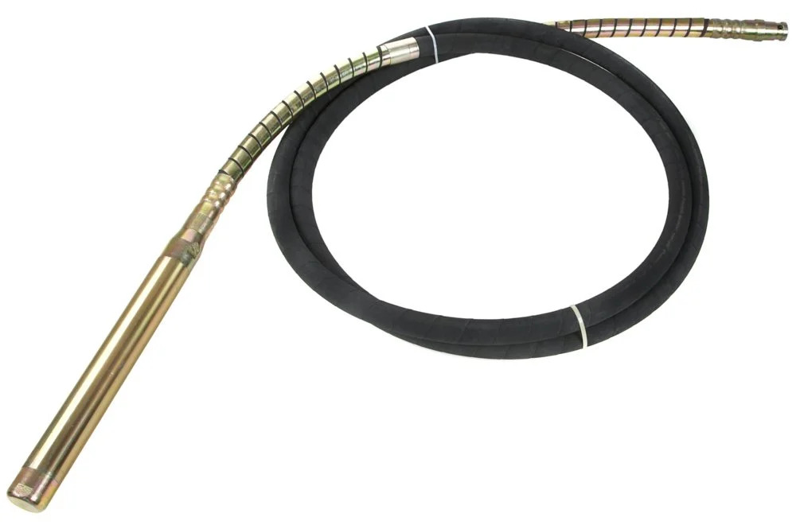

Wacker Neuson Uyumlu Yerli Üretim Hortum 4x45
Vibratör Hortumu
Wacker Neuson beton vibratörleri ile tam uyumlu, yüksek kaliteli yerli imalat hortum. 4 metre uzunluğu ile zorlu şantiye alanlarında rahat çalışma mesafesi sağlar.
Teknik Özellikler
- Hortum Uzunluğu: 4 Metre
- Şişe Çapı: Ø 45 mm
- Motor Girişi: Kare Başlı (Pimli)
- Ağırlık: 4.0 kg
- Uyumluluk: Wacker Neuson vibratörler
Fiyat Bilgisi İçin:
Ürün Avantajları
Yerli Üretim
Hafif (4 kg)
Dayanıklı Yapı
Kolay Montaj
Wacker Neuson 4x45 Hortum - Güvenilir Şantiye Performansı
Ø 45 mm şişe çapı sayesinde etkili vibrasyonla betonun homojen sıkıştırılmasını garanti eder. Kare başlı pimli motor girişi güçlü ve güvenli bağlantı sağlayarak titreşim kaybını önler.
Öne Çıkan Özellikler:
- Yerli Üretim Kalitesi: Wacker Neuson vibratörlerle tam uyumlu, yüksek kaliteli yerli imalat
- Hafif ve Taşınabilir: Sadece 4 kg ağırlığıyla kolay taşınır ve rahatça monte edilir
- Dayanıklı Yapı: Aşınmaya ve zorlu şantiye koşullarına karşı uzun ömürlü performans
- Yüksek Verim: Beton içindeki hava boşluklarını hızla yok ederek sağlam döküm sağlar
- Kolay Montaj: Wacker Neuson vibratör motorlarıyla uyumlu pimli bağlantı ile hızlı kurulum
Kullanım Alanları:
Kolon, kiriş, döşeme ve temel betonlarında kesintisiz sıkıştırma performansı. Küçük ve orta ölçekli şantiyeler için ideal tercih.
Teknik Tablo - Wacker Neuson 4x45 Hortum
| Model | 4x45 |
| Uyumluluk | Wacker Neuson |
| Hortum Uzunluğu | 4 Metre |
| Şişe Çapı | Ø 45 mm |
| Motor Girişi | Kare Başlı (Pimli) |
| Ağırlık | 4.0 kg |
| Üretim | Yerli İmalat |
Garanti ve Servis
1 Yıl Garanti
İmalat hatalarına karşı garanti
Yedek Parça Desteği
Yerli üretim avantajıyla hızlı tedarik
7/24 Destek
Telefon ve WhatsApp teknik destek
Benzer Ürünler

Wacker Neuson M-1500
1.5 HP Beton Vibratör